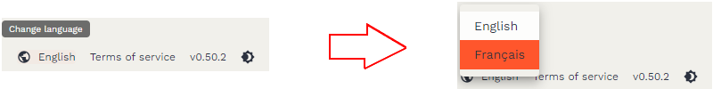
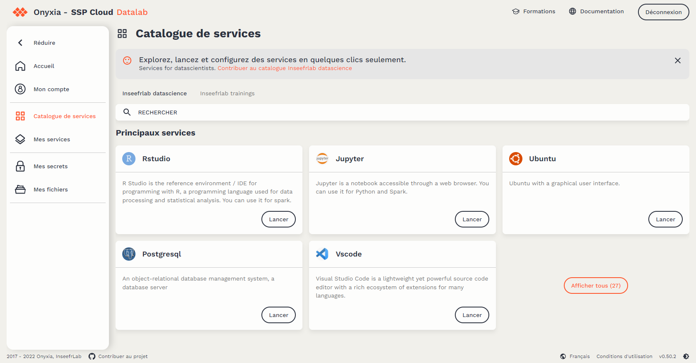
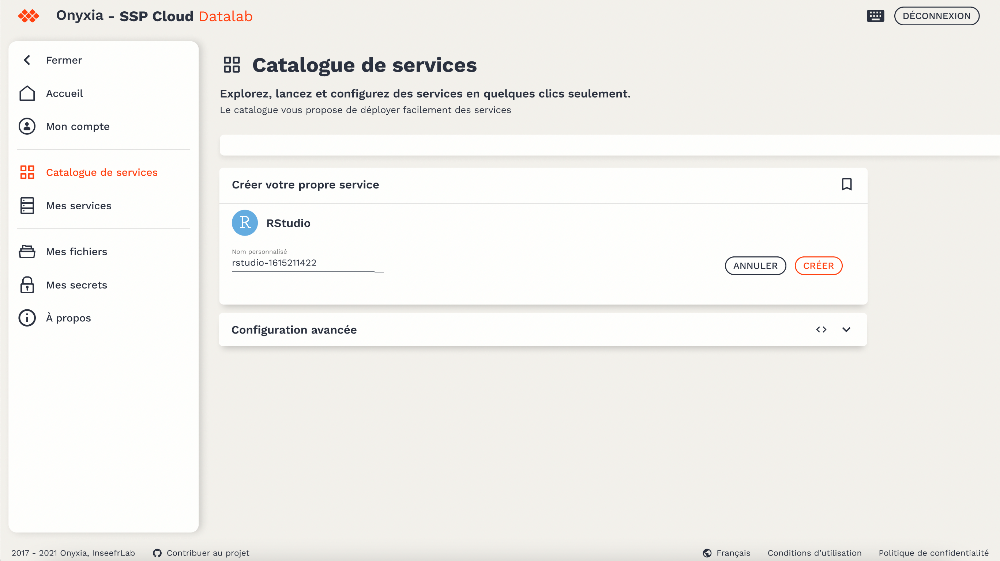
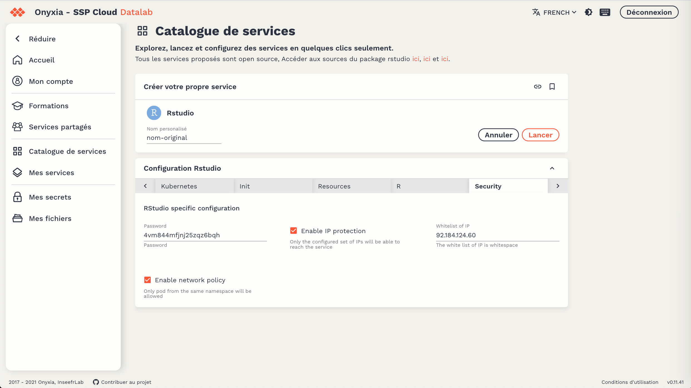
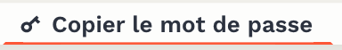
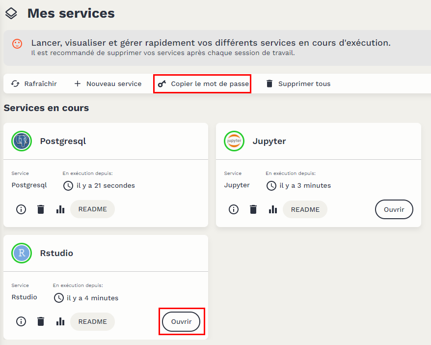

33 Utiliser RStudio sur l’environnement SSP Cloud
Tâche concernée et recommandation
Vous pouvez utiliser R et RStudio sur le SSP Cloud pour mener des expérimentations qui seraient difficiles à réaliser dans AUS. En revanche, le SSP Cloud ne doit pas être utilisé pour réaliser des tâches de production statistique, ni pour traiter des données confidentielles.
Note
Certains exemples de cette fiche utilisent les données disponibles dans le package doremifasolData ; vous ne pourrez reproduire ces exemples que si ce package est installé sur la machine sur laquelle vous travaillez. Si vous ne savez pas si ce package est déjà installé, consultez la fiche Comment utiliser la documentation utilitR.
33.1 Présentation succincte du SSP Cloud
Le SSP Cloud est une plate-forme informatique hébergée à l’Insee et ouverte à tous les agents de la statistique publique. Elle permet aux statisticiens d’utiliser un grand nombre de logiciels de data science (R, Python, PostgreSQL, Jupyter, Spark, Tensorflow…) dans un environnement informatique ergonomique et performant. Il faut donc noter que le SSP Cloud n’est donc pas spécifiquement conçu pour utiliser R.
Le SSP Cloud est une plate-forme sur laquelle vous pouvez mener des expérimentations qui seraient difficiles à réaliser dans AUS, soit parce qu’AUS ne propose pas le logiciel dont vous avez besoin, soit parce que votre traitement demande des ressources informatiques particulièrement importantes.
En revanche, le SSP Cloud n’est pas une infrastructure de production, et n’offre donc pas les mêmes garanties de service qu’AUS. De plus, le traitement de données confidentielles sur le SSP Cloud n’est pas autorisé par défaut.
33.3 Définir les options d’un service RStudio
Lors de la création de votre service RStudio, vous pouvez définir les options du service en naviguant dans les différents onglets de l’interface du SSP Cloud (cadre rouge).
Les principales options sont les suivantes :
- L’option
memory(dans l’ongletResources) définit la quantité minimum garantie de mémoire vive (mesurée en Mo) que votre service RStudio peut utiliser. Cette option est particulièrement importante et vous devez choisir soigneusement sa valeur : si vos traitements requièrent plus de mémoire que la valeur demem, la seule solution consiste à lancer un autre service RStudio avec une valeur dememplus élevée. Il est conseillé d’utiliser 10000 comme valeur par défaut. - L’option
cpu(dans l’ongletResources) définit le nombre minimal de processeurs alloués à votre service RStudio, c’est un minimum garanti. Il est conseillé d’utiliser 2 comme valeur par défaut si vos traitements nécessitent de la parallélisation et laisser l’option par défaut sinon. - L’option
Enable IP protection(dans l’ongletSecurity) est une option de sécurité informatique assez contraignante, qui est activée par défaut. Il est conseillé de la laisser activée. Toutefois, vous pouvez éventuellement la désactiver, notamment si vous savez que vous allez devoir accéder à l’environnement RStudio depuis des adresses IP différentes (exemple : au bureau puis en télétravail). - L’option
version(dans l’ongletService) détermine l’environnement dans lequel RStudio va s’ouvrir. Il s’agit d’un environnement contenant une version donnée deRainsi que des packages pré-installés. Par exemple, l’imageutilitRdisponible propose l’ensemble des dépendances (elles sont nombreuses…) nécessaires pour reproduire tous les exemples présents dans cette documentation. - L’option
PersonalInit(dans l’ongletInit) permet de référencer un script d’initialisation qui exécutera une série d’actions prédéfinies avant de lancer le service, par exemple copier localement des données, lancer un projet RStudio ou définir des paramètres d’affichage de l’interface. Un exemple d’un tel fichier Init utilisé pour des formations peut être trouvé ici. C’est l’URL du fichier sur github.com qui doit être référencé, dans sa version Raw (afficher le fichier dans Github et cliquer surRawen haut à droite pour obtenir cette URL).
Note
Les options d’un service RStudio ne peuvent être définies qu’au moment de la création du service. Si vous vous rendez compte qu’une option du service ne convient pas au traitement que vous voulez faire, vous devez supprimer votre service RStudio et en lancer un nouveau avec les bonnes options. Lorsqu’un ensemble d’options vous conviennent, il est possible de l’enregistrer pour les retrouver lors du prochain lancement d’un service. Pour cela, cliquez sur l’icône de marque-page en haut à droite du panneau de paramétrage. La liste des configurations ainsi définies comme favorites apparaîtront dans SSP Cloud dans la rubrique Mes services, dans la colonne Enregistrés.
33.3.1 Utiliser Github et Gitlab sur le SSP Cloud
Les services ouverts sur le SSPCloud ont une durée de vie limitée. Pour conserver les codes afin de pouvoir les réutiliser ultérieurement ou les rendre disponibles à d’autres personnes, il est nécessaire d’utiliser une plateforme type Gitlab et Github.
Dans le catalogue des services, une plateforme Gitlab est disponible. Son adresse est https://git.lab.sspcloud.fr/ (c’est un Service partagé). Cependant, elle n’apporte pas un niveau de sécurité supérieur aux plateformes https://www.gitlab.com ou https://www.github.com. Il est donc recommandé de privilégier l’une de ces deux plateformes plutôt que le Gitlab mis à disposition sur le SSPCloud.
Le SSPCloud ne permet qu’une authentification HTTPS. L’authentification SSH est donc désactivée (voir la fiche Configurer Git sur son poste de travail pour plus de détails). Les fonctionnalités standards de RStudio pour favoriser l’usage de Git sont disponibles (voir la fiche Utiliser Git avec RStudio pour plus de détails).
33.3.2 Supprimer un service RStudio
Les services RStudio peuvent être arrêtés à tout moment. Avant d’arrêter un service RStudio, il est recommandé de s’assurer que les codes (via Gitlab ou autre Forge utilisant Git, voir ci-dessus) et les données (via S3, voir ci-dessous) à conserver ont bien été sauvegardés.

Pour supprimer un service, il faut se servir de l’un des trois boutons qui permettent d’accéder aux options d’un service RStudio (cadre rouge) :
- Le bouton de gauche permet d’obtenir des informations sur la configuration de votre service (notamment pour l’accès au système de stockage S3) ;
- Le bouton du milieu permet de tuer définitivement un service qui disparaîtra du tableau des services ouverts ;
- Le dernier de droite d’accéder à Graphana, un outil qui permet de suivre en temps réel l’usage mémoire et CPU d’un service RStudio. C’est utile pour bien comprendre ce que fait votre service RStudio.
33.4 Utiliser des données stockées sur le système de stockage S3
33.4.1 Pourquoi utiliser S3 sur le SSP Cloud ?
Le SSP Cloud propose des environnements (comme les services RStudio, Jupyter, etc.) pour exécuter des programmes informatiques. Ces environnements sont temporaires par définition (quelques heures ou quelques jours), et ne peuvent donc pas servir à stocker des données ou des programmes informatiques. Cela a pour conséquence que les programmes informatiques et les données doivent être stockés dans d’autres espaces :
- stockage des codes : il est nécessaire d’utiliser une plate-forme de développement pour stocker des programmes informatiques, telles que Gitlab ou Github.
-
stockage des données : la plateforme SSP Cloud propose un système de stockage de données nommé S3. Depuis votre service RStudio, vous pourrez facilement accéder à des données stockées sur S3 grâce au package
aws.s3.
Note
Voici deux règles à respecter pour faire un bon usage de ces deux espaces de stockage :
- Les plate-formes telles que Gitlab ou Github ne doivent jamais être utilisées pour stocker des données (uniquement des codes).
- Le système de stockage S3 ne doit jamais être utilisé pour stocker des données confidentielles.
33.4.2 Qu’est-ce que le système de stockage S3 ?
Le système S3 (Simple Storage System) est un système de stockage développé par Amazon et qui est maintenant devenu une référence pour le stockage en ligne. Il s’agit d’une architecture à la fois sécurisée (données cryptées, accès restreints) et performante.
Le concept central du système S3 est le bucket. Un bucket est un espace (privé ou partagé) où on peut stocker une arborescence de fichiers. Pour accéder aux fichiers figurant dans un bucket privé, il faut fournir des jetons d’accès (l’équivalent d’un mot de passe) reconnus par le serveur de stockage. On peut alors lire et écrire dans le bucket.
33.4.3 Explorer son dépôt de fichiers
Il est possible d’utiliser l’interface du SSP Cloud pour explorer les fichiers présents dans S3 ainsi qu’ajouter ou télécharger manuellement des fichiers. Le raccourci pour accéder aux fichiers disponibles se trouve dans la barre latérale Mes fichiers
. En cliquant sur cette icône, on ouvre un explorateur qui permet de visualiser les fichiers présents sur son bucket personnel :

Il est possible de naviguer dans l’arborescence depuis cette fenêtre afin, par exemple, de récupérer un chemin qu’on va utiliser avec R. La vignette verte sur la droite indique la commande à utiliser dans un terminal pour lister les fichiers du répertoire courant. Elle permet donc notamment de connaître le chemin d’accès à un fichier permettant d’y accéder à travers un service RStudio du SSP Cloud.
Par défaut, le bucket utilisateur créé à l’inscription sur le SSP Cloud est vierge. Il est néanmoins utile de créer directement un dossier particulier, nommé “diffusion”. Grâce à une politique de droits spécifique, ce dossier et son contenu sont accessibles (en lecture) à tous les utilisateurs du SSP Cloud. Il est donc à privilégier pour déposer des fichiers destinés à être diffusés, comme des données partagées ou des supports de formation.
33.4.4 Utiliser S3 avec un service RStudio
Lorsqu’on crée un service RStudio sur le SSP Cloud, des droits d’accès temporaires au système S3 sont automatiquement initialisés. Ces droits permettent de communiquer avec le serveur de stockage, mais leur usage est complexe. Heureusement, il existe le package aws.s3 qui simplifie beaucoup les interactions entre le service RStudio et S3 en proposant des fonctions de lecture et d’écriture similaires à celles existantes pour lire ou écrire un fichier depuis un poste personnel.
33.4.4.1 Vérifier les droits d’accès à un bucket
Pour lister l’ensemble des fichiers disponibles dans un bucket, il suffit de charger le package aws.s3 et d’exécuter la commande get_bucket(). Cette commande donne quelques informations sur les fichiers stockés dans le bucket : nom et emplacement, taille et date de dernière modification. Il n’est pas nécessaire de configurer les droits d’accès au système S3, car le service RStudio en dispose dès son lancement.
Imaginons qu’on souhaite accéder au bucket nommé donnees-insee qui contient des fichiers d’exemples (lien) et auquel tout utilisateur du SSP-Cloud a accès. Voici comment afficher la liste des objets contenus dans ce bucket :
# Attention cet exemple renvoie un très grand nombre de résultats
# library(aws.s3)
aws.s3::get_bucket("donnees-insee", region = "")
Tip
La commande get_bucket() peut renvoyer un grand nombre de résultats si le bucket contient un grand nombre de fichiers. Le bucket donnees-insee contient ainsi plus de 1000 fichiers. Il est donc conseillé d’utiliser l’option prefix pour restreindre le chemin des fichiers que l’on souhaite lister. Par exemple, le code suivant fournit la liste des fichiers situés dans le répertoire diffusion/ESTEL/2015 du bucket donnees.insee :
#library(aws.s3)
aws.s3::get_bucket("donnees-insee", region = "", prefix = "diffusion/ESTEL/2015")33.4.4.2 Renouveler des droits d’accès périmés
Les droits d’accès au S3 sont temporaires par définition et sont donc rapidement périmés. Si vous utilisez un service RStudio pendant plusieurs jours, il est probable que R renverra l’erreur suivante :
$ Code : chr "InvalidAccessKeyId"
$ Message : chr "The Access Key Id you provided does not exist in our records."
$ BucketName : chr "donnees-insee"
$ Resource : chr "/donnees-insee/"
[... lignes coupées ...]
Error in parse_aws_s3_response(r, Sig, verbose = verbose) :
Forbidden (HTTP 403).Voici la procédure à suivre pour renouveler les droits d’accès à S3. Cliquer sur Mon compte

Cliquer sur l’onglet Connexion au stockage. La première ligne vous indique jusqu’à quand les droits d’accès sont valides. Vérifier que les droits d’accès sont bien formatés pour R (cadre rouge), puis copier les droits d’accès (cadre bleu).

Coller les droits d’accès dans un script R de votre service RStudio, puis exécuter les lignes de code sélectionnées dans la capture d’écran ci-dessous. Le bouton dans le cadre bleu ci-dessus permet de copier les commandes qui conviennent dans le presse-papier. La partie la plus importante est la suivante (en remplaçant XXXXXXXXXXXXXXXXX par les valeurs en question):
Sys.setenv("AWS_ACCESS_KEY_ID" = "XXXXXXXXXXXXXXXXX",
"AWS_SECRET_ACCESS_KEY" = "XXXXXXXXXXXXXXXXX",
"AWS_DEFAULT_REGION" = "us-east-1",
"AWS_SESSION_TOKEN" = "XXXXXXXXXXXXXXXXX",
"AWS_S3_ENDPOINT"= "minio.lab.sspcloud.fr")Ces variables d’environnement permettent au package aws.s3 de déterminer la localisation du système de fichier et l’identité de la session R
33.4.4.3 Lire les fichiers d’un bucket
Une fois que l’on connaît l’emplacement d’un objet dans un bucket, on peut l’importer dans le service RStudio avec la fonction s3read_using(). Cette fonction permet d’importer n’importe quel objet, mais nécessite que l’on précise la fonction à utiliser pour lire l’objet. Les arguments de s3read_using() sont les suivants :
-
FUN: la fonction à utiliser pour lire le fichier ; cet argument doit être écrit sous la formepackage::function; -
object: le chemin du fichier à importer ; -
bucket: le bucket dans lequel se trouve l’objet ; -
opts: les options.
Dans l’exemple qui suit, on souhaite importer les données du dispositif Filosofi 2017 agrégées par commune, qui sont stockées dans le chemin /diffusion/FILOSOFI/2017/FILOSOFI_COM.csv dans le bucket donnees-insee. On importe ces données avec la fonction fread() du package data.table. Vous pouvez consulter la fiche [Importer des fichiers plats (.csv, .tsv, .txt)] pour une présentation détaillée de cette fonction.
df <-
aws.s3::s3read_using(
FUN = data.table::fread,
# Mettre les options de FUN ici
object = "/diffusion/FILOSOFI/2016/FILOSOFI_COM.csv",
bucket = "donnees-insee",
opts = list("region" = "")
)Il est possible d’utiliser toutes les options de la fonction d’importation, en les ajoutant immédiatement après l’argument FUN. Ainsi, dans l’exemple qui suit, les options nrows et select de la fonction fread() sont utilisées pour importer uniquement les 1000 premières lignes du fichier, et pour sélectionner trois colonnes.
df2 <-
aws.s3::s3read_using(
FUN = data.table::fread,
# Les options de fread sont ici
nrows = 1000L,
select = c("CODGEO", "LIBGEO", "TP6016"),
object = "/diffusion/FILOSOFI/2016/FILOSOFI_COM.csv",
bucket = "donnees-insee",
opts = list("region" = "")
)33.4.4.4 Ecrire un fichier dans un bucket
La fonction s3write_using() permet d’exporter un objet depuis le service RStudio vers un bucket, mais nécessite que l’on précise la fonction à utiliser pour écrire l’objet. Exporter vers un bucket nécessite évidemment d’avoir les droits en écriture sur le bucket concerné. Les arguments de s3write_using() sont les suivants :
-
x: l’objet à exporter ; -
FUN: la fonction à utiliser pour écrire le fichier ; cet argument doit être écrit sous la formepackage::function; -
object: le chemin du fichier à exporter ; -
bucket: le bucket dans lequel l’objet sera exporté ; -
opts: les options.
Comme pour la fonction s3read_using, il est possible d’utiliser toutes les options de la fonction d’exportation, en les ajoutant immédiatement après l’argument FUN. Dans l’exemple suivant, on charge dans le service RStudio la table du code officiel géographique 2019 disponible dans le package doremifasolData, puis on l’exporte en format csv dans le fichier data/cog_com_2019.csv du bucket mon_bucket. On utilise les options sep et col.names de la fonction fwrite() pour définir le séparateur et exporter les noms de colonnes.
# Attention, cet exemple n'est pas directement reproductible
# Il faut avoir les droits en écriture sur le bucket
library(doremifasolData)
cog_com_2019 <- doremifasolData::cog_com_2019
aws.s3::s3write_using(
cog_com_2019,
FUN = data.table::fwrite,
# Les options de fread sont ici
sep = " ;",
col.names = TRUE,
object = "data/cog_com_2019.csv",
bucket = "mon_bucket",
opts = list("region" = "")
)33.5 Liens utiles
- Le salon Tchap SSPCloud ;
- Le salon Tchap d’assistance aux utilisateurs des Logiciels Statistiques et Libre Service Insee - Outils Stats V2 ;
- Un tutoriel sur le SSP Cloud.
- La documentation en ligne du Datalab
33.2 Comment travailler avec un service RStudio sur le SSP Cloud
33.2.1 Créer un compte sur le SSP Cloud
Il est nécessaire de disposer d’un compte personnel SSP Cloud pour en utiliser les services. Si vous n’avez pas de compte sur le SSP Cloud, vous pouvez vous en créer un en cliquant sur ce lien (https://datalab.sspcloud.fr/home) puis suivre les indications. Deux points sont importants à noter :
prenomnomen faisant attention aux règles précédentes. Par exemple, si vous vous appelez Jérôme-Gérard L’Hâltère, votre nom d’utilisateur pourra êtrejeromegerardlhaltere.La grande majorité des problèmes rencontrés à la création d’un compte SSP Cloud découle d’un
usernamene respectant pas ces règles. Dans ce cas, la seule solution consiste à demander aux administrateurs du SSP Cloud de supprimer votre compte, pour que vous puissiez en créer un nouveau. Vous pouvez contacter les administrateurs en écrivant un message sur le salon TchapSSPCloud.33.2.2 Changer la langue du SSP Cloud
Par défaut, l’interface du SSP Cloud est en anglais. Pour choisir le français, deux solutions sont offertes :

My accountdans le menu de gauche puis dans l’ongletInterface preferencesvous pouvez changer la langue dans la fenêtre qui s’affiche.33.2.3 Créer un service RStudio
Voici comment procéder pour créer un service RStudio (avec l’interface en français) :

LANCER;

33.2.4 Accéder à ses services
Pour accéder à l’ensemble de ses services, il est nécessaire de cliquer sur le bouton
. La page qui s’ouvre permet alors de lister l’ensemble des services ouverts :
Pour accéder à l’un d’eux il faut cliquer sur le bouton
Il est recommandé de ne pas garder actifs des services qui ne sont plus utiles. Au coût environnemental d’avoir des ressources allouées inactives, s’ajoute le fait que cela mobilise des ressources qui pourraient être utilisées par d’autres. La procédure pour fermer des services est décrite plus bas.
33.2.5 Se connecter à un service RStudio
Une fois que votre service RStudio est créé, il faut vous connecter à ce service. Pour ce faire, il faut vous identifier avec un nom d’utilisateur et un mot de passe (différent de celui de votre compte SSP Cloud). Pour récupérer ce mot de passe, il y a deux façons de faire. Vous pouvez cliquer sur
READMEet copier le mot de passe, ou cliquer sur la clé
présente dans la page Mes services
. Cette action permet de copier le mot de passe dans le presse-papier ce qui facilite son utilisation.
Pour accéder à un service, le bouton
permet d’ouvrir une page d’authentification.

Les identifiants sont :
Username:rstudio;Password: le password copié précédemment (il suffit de faireCtrl + V).L’interface habituelle de RStudio s’affiche alors dans la fenêtre.